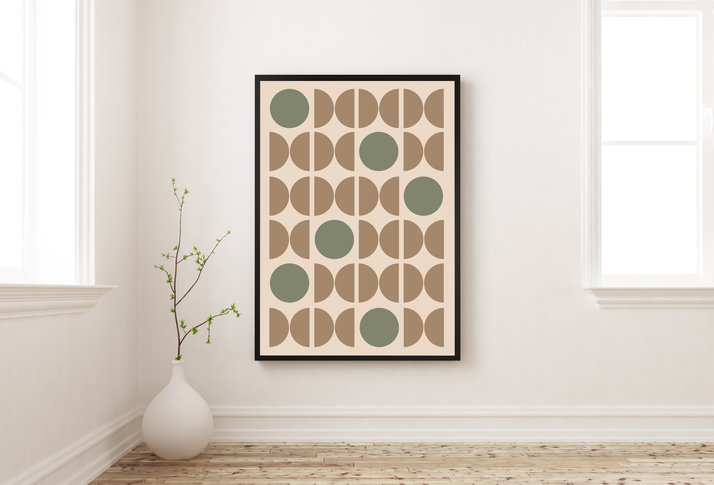
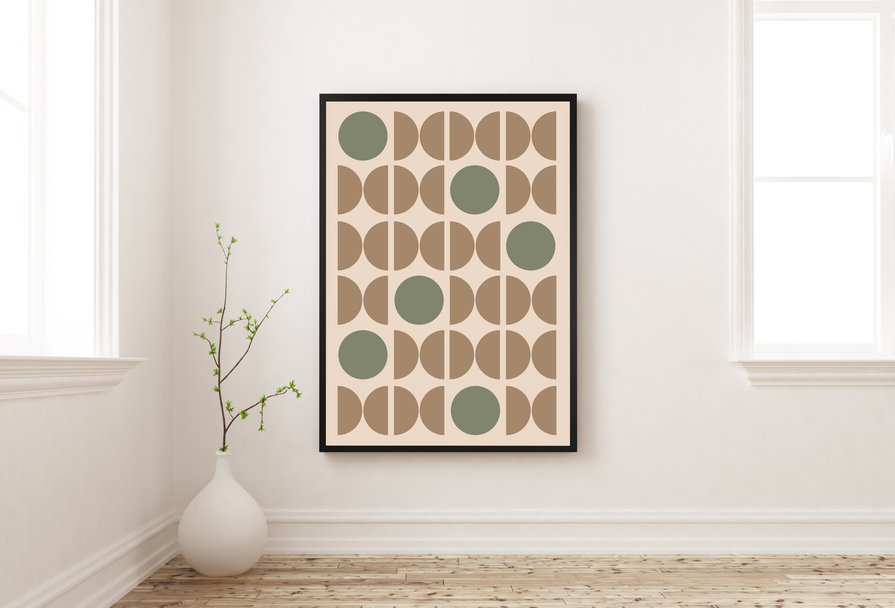

Poster designs in
earth tones
Deze posters in aardetinten gebruiken eenvoudige geometrische vormen en zachte kleuren om een kalme en tijdloze sfeer te creëren. Perfect voor interieurs waarin balans, rust en natuurlijke eenvoud centraal staan.

 
